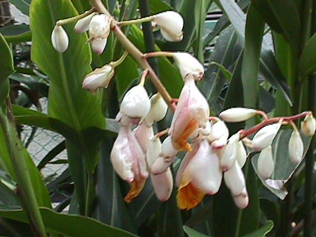
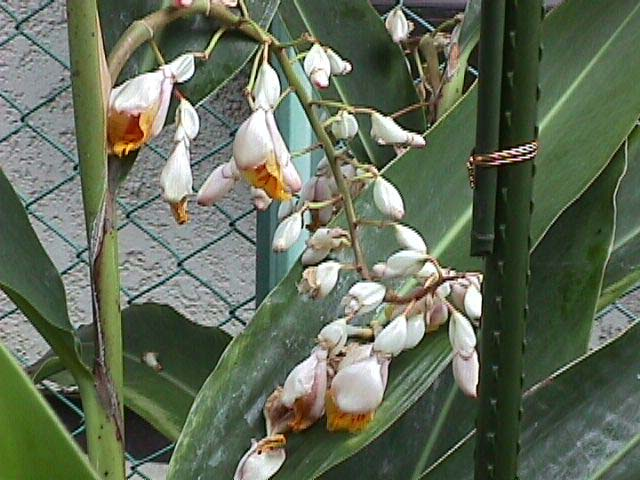
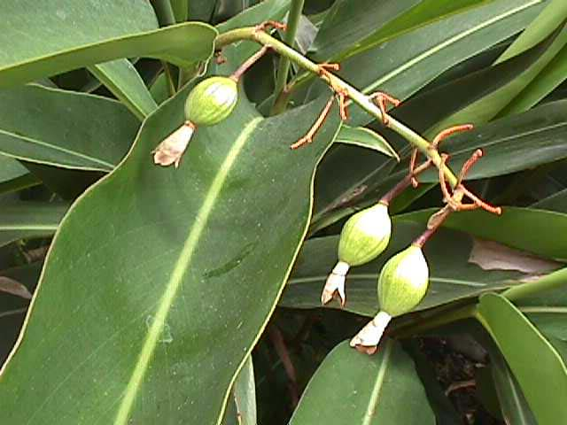
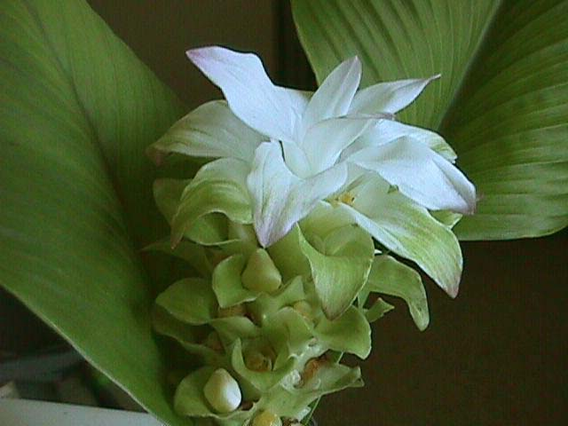

月桃
先月に引き続き花は先端部の方に移っています。 今年は花の勢いが良く10房の花が咲きました。

月桃
一旦枯れたはずの手前の花が復活して2度目の花を咲かせます。 同じ花が2度咲くというめずらしいはなです。

月桃
今年は実もつきました。以前実がついた時は株が枯れるという話を聞いて間引いてしまいましたが今年は最後迄育ててみようと思っています。

うこん
座間では育てる場所も無かったので静岡県の蒲原町に植えたものです。「身体によい」というキャッチフレーズで根が大変騒がれていますが美しい花が咲きました。